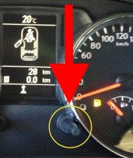

Turning off service indicator
This function is a description of a manual procedure that is performed in the main instrument.
Preconditions for the test:
Ignition on, engine off.
Procedure:
Turn on the ignition.
Within five seconds after the ignition has been switched on, press and hold in the right button (circled in figure).
Hold in the button until the "wrench" starts to flash.
Let up the button.
Press the button once.
Wait until the display returns to showing engine oil level.
Turn off the ignition.
The function is done.
